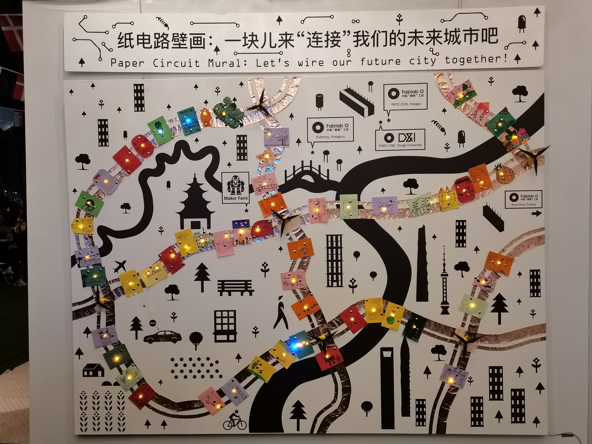
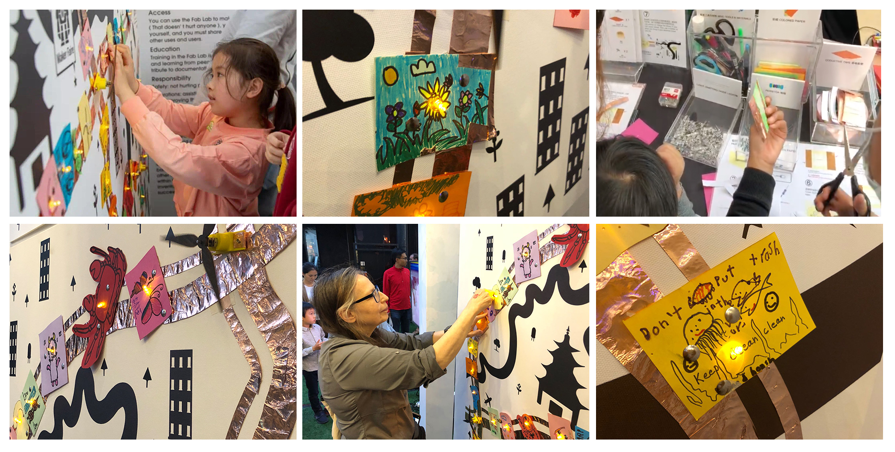

✺ Back
Build a Circuit City @ Shanghai Makerfaire 2020
This was a mural made as an interactive activity for the visitors of the Fab Lab O booth at the Shanghai Makerfaire (2020). Roads of the city are turned into circuits. The participants were invited to build a LED circuit on paper, making a paper circuit drawing about their vision of an ideal city. In addition to the LED, capacitive sensor input, buzzer output and DC motor output were embedded to the mural as representation of different features in the city. Image on the mural surface was made by printing on canvas. Additional icons were made with vinyl cutter.Medium：mixed-media on canvas, conductive material, electronic components (buzzer, LED, motor), ArduinoCollaborator: Fab Lab O, ShanghaiSpecial Thanks: Pan Cheng

Back